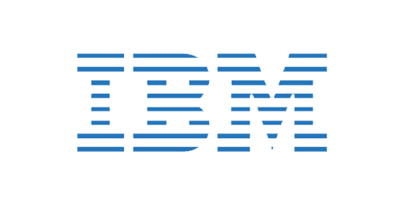

Enhanced the search engine in the game editor by implementing arithmetic expression parsers to allow for complex search queries. As the search function is frequently used, this significantly reduced unnecessary time wasted.
Developed and designed an application that dynamically manages perforce client specs and workspace files based on the user's roles and projects. This reduced overhead time by as much as 90% since repetitive tasks such as client spec modifications, disk space checking, and file syncing are now done automatically.
Reduced confusion by consolidating applications with similar functions and implementing setup wizards to simplify the training process.
All tools were developed in C#/WPF with MySQL being the backend database.
Software Developer, Co-op
Designed and developed an ASP.NET MVC web application that is used by the security department to evaluate the risks of adding new features to future versions of BlackBerry 10.
Streamlined user experience by using jQuery Ajax along with Telerik to allow users to update risk details and receive real time feedbacks. This allowed teams around the world to collaborate together on resolving security issues.
Developed an indexing system in C# that scans the entire source code repository and indexes the code to allow security researchers to easily identify vulnerabilities.
Took initiative to present the developed applications on behalf of the team to other teams.
Received the employee recognition award in addition to an outstanding co-op evaluation.
Memory Qualification Engineer, Co-op
Tuned graphic voltage tables to ensure stability and optimal performance.
Acquired solid understanding of graphic ASIC/memory interfaces.
Developed programs to compile results; helped reduce project time by around 10%.
Performed signal integrity tests on GDDR5 graphic memory.

WebSphere Install Test Developer, Co-op
Developed and maintained an automation framework used to verify installations of new patches for WebSphere Application Server using Java and Ant scripts.
Enabled support for future versions of WebSphere by removing hard-coded references and abstracting code. This improved the flexibility of the framework to include different versions of WebSphere.
Designed and implemented code to enable concurrency when testing WebSphere patches. Multi-threading code was used to ensure patch generation and installation can be handled simultaneously.
Programmer Analyst, Co-op
Worked with executives, developers and QA to develop a J2EE application used to analyse financial trends of the market.
Assisted in the web development of www.scotiamanagedcompanies.com using Java and jQuery, specifically pages of each fund.
Developed and completed a data management module to track bank data revisions using Java and Oracle SQL.
Received outstanding evaluation as a result of the work done in the J2EE web application.
Web Programmer, Co-op
Took ownership and independently completed a CRM system that is used to manage a perspective student's information.
Used JavaScript along with JSP for presentation; Java and MySQL for backend.